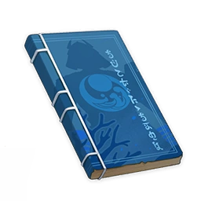

Inazuma · Books & Literature
Debates on the "Viceroy of the East"
This Inazuman Quest Item preserves Watatsumi folk accounts of Touzannou, the unnamed orphan raised by Orobashi and later known to Yashiori’s people as Akuou. It follows his training under the shrine maiden Mouun, the eastern expedition, and the defeat of Orobashi’s forces.

Quest Item record and the two names
Debates on the "Viceroy of the East" is a single Inazuma Quest Item found in Bourou Village on Watatsumi Island. Its item description says that the Viceroy of the East, or Touzannou in Watatsumi tradition, is known across Raiden’s domains as Akuou. It calls him Orobashi’s first and last vassal ruler.
The surviving text is a folk account rather than the legal debate its title might suggest. It refers to island folk-tunes and songs of the Yuna Clan, and it does not name an author or give the man a birth name. Touzannou and Akuou are titles by which other people remember him.
A nameless child accepted by Orobashi
The account says Touzannou was born to a low status and grew up without a personal name, surname, or clan to protect him. Some folk-tunes call him the child of moonlight and tide; the text speculates that he might have been an orphan or the child of people carried ashore by the sea. It does not settle his parentage.
Watatsumi Omikami, Orobashi, accepted the boy, as the book says he had earlier accepted the lost people from the depths. That detail frames the boy’s later allegiance as the beginning of a relationship with the god, while leaving his early life largely within legend.
Mouun, Ayame, and his Watatsumi upbringing
The boy apprenticed himself to Mouun and her sister and learned Watatsumi rites and whalesongs. The separate book The Life of Mouun the Shrine Maiden names Mouun’s younger twin as Ayame, later known as Umigozen, and places Mouun in the Yuna Clan, a Watatsumi house associated with whalesong and marine life.
The two records complement each other without turning the folk biography into a complete life history. The Viceroy text keeps the sisters unnamed in its account of the boy’s childhood; Mouun’s biography supplies their family history, roles, and later fates.
The moonlit swim and two sword styles
Yuna Clan songs tell that Mouun invited the young man to swim with her beneath moonlight and stars. The story says he sensed the words and emotions of sea creatures and heard Mouun’s gentle but mournful words; afterward, he chose his future path. The passage gives the pair an intimate and melancholic connection without documenting a formal marriage or a complete romance.
The text says he then comprehended two sword styles: Getsumouun and Yuushio. Though he had no descendants, Watatsumi’s warriors kept the techniques alive and adapted them over generations. This preservation is the book’s explanation for how the styles survived in a society it describes as lacking a broader swordsmanship tradition.
The eastern expedition and the title Touzannou
When Orobashi began the eastern expedition from which he would not return, the young man led the vanguard. He took a place the Watatsumi people called Touzan, and Orobashi gave him the honorific Touzannou, rendered in the text as the king of the eastern mountain. The item description identifies him as the god’s vassal ruler.
The name Akuou belongs to a different memory of the same person. The book says Yashiori Island’s people regarded him as a brutal, savage wicked king. It sets Watatsumi’s honored commander against the reputation he acquired among people who faced the invasion; the text does not describe his administration in enough detail to independently judge either account.
The war and the three different fates
The book says Akuou and Orobashi were both struck down by the Musou no Hitotachi. In the Archon Quest Omnipresence Over Mortals, Teppei tells the Traveler that Orobashi invaded Yashiori Island and that the Raiden Shogun slew the serpent with this technique. The Archon Quest provides the conflict’s broad political framing; the Quest Item preserves Watatsumi’s local memory of its leaders.
The account’s brief, poetic ending can make Mouun’s fate sound simultaneous with the two deaths. The Life of Mouun the Shrine Maiden gives a clearer sequence: Mouun turned back after hearing that Orobashi and Touzannou had fallen, then Sasayuri’s subordinates ambushed and killed her and the whale Daikengyou. Ayame made a final stand and disappeared into the sea.
Legacy in Watatsumi and the weapon Akuoumaru
Watatsumi people still call exceptional warriors the scions of Touzannou. The phrase marks a cultural inheritance through skill and reputation, not a confirmed bloodline: the book explicitly says he had no descendants. The continued use of Getsumouun and Yuushio is the more concrete legacy it records.
The weapon Akuoumaru adds a personal detail that the book only hints at. Its lore remembers the young man’s dream of dueling the Great Tengu of Mt. Yougou and bringing a mask to Mouun and Ayame. The weapon text describes the dream ending in the war and the two shrine maidens never returning; it does not change the book’s account of how the styles were passed down.
What the records establish and leave open
Together, the item description, Yuna Clan songs, The Life of Mouun the Shrine Maiden, and the Archon Quest establish a consistent outline: a boy without a known name was raised by Orobashi, trained by Mouun and Ayame, became the warrior called Touzannou and Akuou, led the eastern expedition, and died with Orobashi. They also distinguish Mouun’s later death from the deaths of the two leaders.
The sources do not reveal his birth name or parentage, give a neutral record of his rule on Yashiori, or preserve the expedition’s full political and military history. His ability to understand sea creatures belongs to the folk account, and his relationship with Mouun is presented through songs and poetic recollection. These gaps are part of the text’s source history, not details to fill with invented legal or administrative debates.
This is an original CoreGG reading guide, not an official HoYoverse article or a reproduction of the game text. Source links below identify the records used so you can check the original context.
Sources & references
Check these sources for the original game text and reference trail.
- Genshin Impact Wiki · Quest Item record
- HoYoWiki · Debates on the "Viceroy of the East"
- English text transcription · Debates on the "Viceroy of the East" (source credited to HoYoWiki)
- English text transcription · The Life of Mouun the Shrine Maiden
- In-game quest transcript · Omnipresence Over Mortals
- HoYoWiki · Akuoumaru
- HoYoWiki · Books index
- HoYoverse · In-game Books Archive